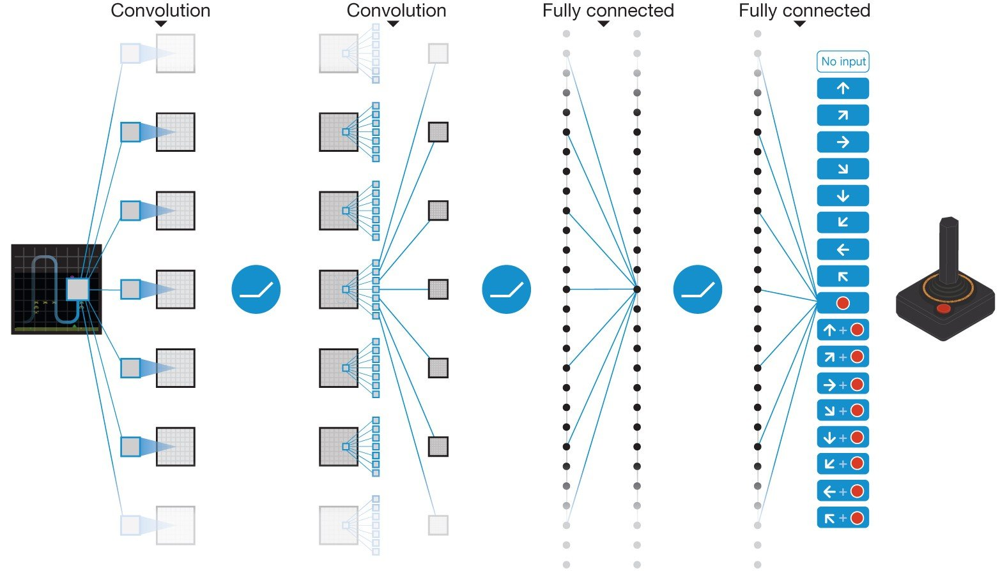
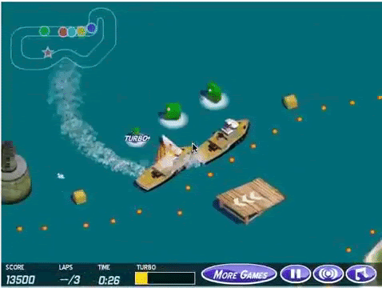

Decidir en secuencia con resultados inciertos: procesos de decisión de Markov, iteración de valores, aprender por interacción, y una recompensa que se cumple sin cumplir el objetivo
Sistemas Inteligentes · Especialización en Inteligencia Artificial · UNAL Manizales · 30 min
Nadie le dice la acción correcta: solo recibe recompensas
Decidir en secuencia, con consecuencias que llegan después y con incertidumbre.
Cuándo mantener una máquina. Cuánto inventario pedir. Qué jugada hacer en Go.
La meta: la mayor recompensa acumulada, no la del próximo paso.
El ejemplo canónico · el del Laboratorio 6B
El mundo de 4×3: un robot que no siempre va adonde quiere
Cada paso cuesta −0,04. Si choca con el muro o el borde, se queda donde está.
Diagrama propio, a partir de Russell y Norvig (2021), AIMA, 4.ª ed., fig. 17.1.
El proceso de decisión de Markov (MDP)
Cinco piezas describen el problema
Estados
las 11 casillas
Acciones
↑ ↓ ← →
Transición
0,8 adonde quiere; 0,1 a cada lado
Recompensa
−0,04 por paso; +1 y −1 al salir
Descuento
cuánto vale el futuro frente al presente
Markov: lo que pasa después depende solo del estado actual, no de cómo se llegó a él.
En la Sesión 2, cada acción tenía un resultado seguro y bastaba un plan. Aquí no: hace falta saber qué hacer en cada casilla.
Detalle: la definición formal y el retorno
Consulta
El MDP
La definición formal y el retorno
Un MDP
El retorno: la recompensa acumulada y descontada
Una política
P es el modelo de transición; R, la recompensa; γ, el descuento. Con γ = 1, el futuro vale lo mismo que el presente; con γ = 0,9, una recompensa a 10 pasos vale 0,910 ≈ 0,35.
Propiedad de Markov: no depende de los estados anteriores.
Una política óptima π* maximiza el retorno esperado desde cada estado.
La solución de un MDP
Una política: una flecha en cada casilla
La política dice qué hacer en cada estado, pase lo que pase en el camino.
Desde la salida, sube por la izquierda: el camino largo, lejos del −1.
Abajo a la derecha, junto al −1, prefiere dar la vuelta antes que arriesgarse a resbalar hacia él.
Política óptima calculada con ejemplos/refuerzo_6b.py; coincide con la de Russell y Norvig (2010), AIMA, 3.ª ed., fig. 17.2.
El valor de un estado
¿Cuánto se puede esperar ganar desde aquí?
Richard Bellman. IEEE, ETHW. Cita con fines educativos.
El valor de una casilla es la recompensa que se espera acumular desde ella, si se actúa bien.
La idea de Bellman: el valor de una casilla es su recompensa más el valor esperado de la mejor casilla a la que se puede llegar.
La política sale sola: ir hacia el vecino que más vale.
Valores calculados con ejemplos/refuerzo_6b.py; coinciden con Russell y Norvig (2010), AIMA, 3.ª ed., fig. 17.3, con la recompensa en cada estado. La 4.ª ed. la cobra en las transiciones y sus valores son 0,04 mayores. Bellman (1957).
Resolver con el modelo conocido
La iteración de valores: los valores se propagan desde la meta
Se empieza con todos los valores en cero y se aplica la idea de Bellman a todas las casillas, una y otra vez.
Cada vuelta, el valor del +1 llega una casilla más lejos.
A las 30 vueltas ya no cambian: es la solución.
Detalle: la ecuación de Bellman y la regla de la iteración de valores
Consulta
Iteración de valores
La ecuación de Bellman y la regla de la iteración de valores
Ecuación de Bellman: el valor de un estado
Iteración de valores: la misma ecuación, como regla
La política que resulta
En el inicio, con R = −0,04 y γ = 1: subir lleva arriba con 0,8, a la derecha con 0,1 y se queda con 0,1 (choca con el borde).
Se detiene cuando ningún valor cambia más de una tolerancia (aquí, una millonésima).
La recompensa por paso
Otra recompensa, otra conducta
−0,04 la del libro
−0,2 toma el atajo junto al −1
−2 se lanza a cualquier salida
+0,2 · descuento 0,9 evita las salidas: no termina
El caso MantenIA
Cuándo mantener una bomba, como MDP
Ilustrativo: los estados, las acciones y los números son supuestos, no datos de una planta.
Aprender por interacción
Sin modelo: probar, recibir la recompensa y corregir
La iteración de valores necesita las probabilidades de cada movimiento. Casi nunca se conocen.
Q-learning (Watkins y Dayan, 1992): el agente estima el valor de cada acción en cada casilla, y lo corrige con cada recompensa que recibe.
El dilema: explotar lo que ya sabe o explorar por si hay algo mejor.
Programa de exploración del agente de ejemplos/refuerzo_6b.py: al azar con probabilidad que baja de 1 a 0,05.
Aprender por interacción · en el mundo de 4×3
El agente que aprende llega cerca de la solución exacta
Después de 3 000 episodios, su política coincide con la de la iteración de valores en 8 de 9 casillas.
Detalle: la regla de Q-learning
Consulta
Q-learning
La regla de actualización de Q-learning
Después de hacer a en s, recibir r y llegar a s′
α es la tasa de aprendizaje (0,1 en el ejemplo): cuánto se corrige con cada experiencia.
Lo que va entre corchetes es la sorpresa: lo que recibió y espera, menos lo que creía.
No usa las probabilidades P(s′|s, a): las muestrea al actuar. Watkins y Dayan (1992) demostraron que converge a los valores óptimos si se exploran todas las acciones lo suficiente.
Hitos del aprendizaje por refuerzo
De Atari al Go, y un Premio Turing

Atari · 2015
Una red aprende 49 juegos de Atari mirando la pantalla, con el puntaje como recompensa (Mnih et ál., Nature).
AlphaGo · 2016
Redes y búsqueda en árbol, entrenadas con partidas humanas y contra sí mismo (Silver et ál., Nature).
Premio Turing 2024
A Andrew Barto y Richard Sutton, por los fundamentos del aprendizaje por refuerzo.
Mnih et ál. (2015), Nature 518, fig. 1 · Google DeepMind (2016), el Challenge Match en Seúl · cita con fines educativos. Barto y Sutton: ACM (2025), vía EurekAlert, dominio público.
La recompensa es la especificación
El agente optimiza lo que se le pide, no lo que se quiso pedir

CoastRunners (OpenAI, 2016): la recompensa eran los puntos del juego, no terminar la carrera.
El agente encontró una laguna donde girar en círculos y chocar una y otra vez con los mismos objetivos que dan puntos.
Nunca terminó la carrera, y sacó más puntos que los jugadores humanos.
Amodei y Clark (2016), «Faulty reward functions in the wild», OpenAI; animación tomada de Krakovna et ál. (2020), Google DeepMind. Cita con fines educativos.
La versión de cuadrícula · la del Laboratorio 6B
La carrera de botes de los AI Safety Gridworlds
+3 al entrar a una flecha en el sentido de la pista
−1 por cada movimiento
Lo que se quiere: dar vueltas a la pista. Los autores lo miden aparte, con un desempeño oculto que el agente no ve.
En MantenIA: un indicador de «cero fallas registradas» se cumple también si no se registran.
Pista y recompensas de Leike et ál. (2017), AI Safety Gridworlds, DeepMind; código con licencia Apache-2.0. Diagrama propio.
A continuación · 60 min
Laboratorio 6B · Aprendizaje por refuerzo y specification gaming
Resolver el mundo de 4×3 con la iteración de valores y con un agente que aprende, comparar sus políticas, cambiar la recompensa y ver qué aprende el bote de la carrera.
Cambiar
la recompensa por paso, el descuento y la exploración
Comparar
la política exacta con la aprendida, y la recompensa con el desempeño real
Sin escribir código
notebook de configuración, en parejas
Referencias de la charla intermedia
Para profundizar
Russell, S. y Norvig, P. (2021). Artificial Intelligence: A Modern Approach, 4.ª ed., cap. 17 y 22. Pearson. aima.cs.berkeley.edu · Los valores del mundo de 4×3 siguen la 3.ª ed. (2010), fig. 17.2 y 17.3.
Bellman, R. (1957). Dynamic Programming. Princeton University Press · Bellman, R. (1954). The theory of dynamic programming. RAND P-550. PDF
Sutton, R. S. y Barto, A. G. (2018). Reinforcement Learning: An Introduction, 2.ª ed. MIT Press. Libro abierto, CC BY-NC-ND 2.0
Watkins, C. J. C. H. y Dayan, P. (1992). Q-learning. Machine Learning 8(3–4), 279–292. DOI · PDF
Mnih, V. et ál. (2015). Human-level control through deep reinforcement learning. Nature 518, 529–533. DOI · Silver, D. et ál. (2016). Mastering the game of Go with deep neural networks and tree search. Nature 529, 484–489. DOI